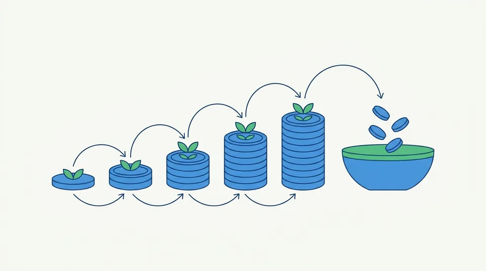

トップ ＞ 読みもの ＞ 配当を再投資すると、定年後の収入はどれだけ変わるか
配当を再投資すると、定年後の収入はどれだけ変わるか
公開 数字は 2026-09-11 時点

定年のあと、毎年きまった額が入ってくる形をつくりたい—— そのための方法のひとつが、高配当株の配当を使わずに同じ株へ回すやり方です。 この記事では、その場合に何がどう増えるのかを計算で確かめます。
配当には2つの使い道があります
受け取った配当は、使うか同じ株を買い足すかのどちらかです。 買い足すことを再投資といいます。
- 配当を受け取る持っている株数に応じて、年に1〜2回振り込まれます
- 同じ株を買い足すその配当で、また株を買います
- 株数が増える次の配当は、増えたぶんだけ多くなります
- これがくり返される配当が配当を生む形になります
25年つづけると、どれだけ違うか
くらべやすいように、こう置きます。毎月2万円ずつ、25年買い続ける。 配当の利回りは年4%のまま変わらない。株価も変わらない。 自分で出すお金は合計600万円で、どちらも同じです。
最初の5年で増えたのは約10万円だけです。10年でも48万円。 ところが20年で235万円、25年で約400万円になります。 後半になるほど急に効いてきます。 配当で買った株が、さらに配当を生むようになるからです。
年240,000円と年399,801円。 月にすると 20,000円 と 33,317円 の差です。 出したお金は同じなのに、受け取れる額が1.7倍になりました。
受け取りはじめてからが本番です
再投資をやめて使いはじめると、その先はこうなります。
ここが、取りくずしていく貯金との違いです。 貯金は使えば減りますが、配当は株を持ち続けるかぎり入ってきます。 元本にあたる株はそのまま残ります。
「取得利回り」という考え方
覚えておくと役に立つ言葉です。いま払った額に対して、いくら配当をもらえるか のことをいいます。
4%の株を100万円ぶん買えば、配当は年4万円。取得利回りは4%です。 ここで配当を再投資して株数を増やすと、自分で出したお金は増えていないのに 配当だけが増えます。上の例では、600万円に対して399,801円なので 6.7%になりました。
うまくいかない場合もあります
上の計算は配当も株価も25年変わらないという、現実にはありえない前提で 出しています。実際に効いてくるのは次の3つです。
どんな株を選ぶか
この計算が成り立つには、配当を払い続けてくれる会社が要ります。 利回りの高さだけで選ぶと、減配で前提が崩れます。
本サイトは2026-09-11時点で、 配当と財務の10項目のうち機械で判定できる9項目を満たした銘柄を 15社挙げています。その配当利回りの中央値は 4.35%でした。上の計算で置いた4%は、この水準から取っています。
あわせて読む
本サイトは情報提供のみを目的としており、投資勧誘・投資助言ではありません。投資判断はご自身の責任でお願いします。